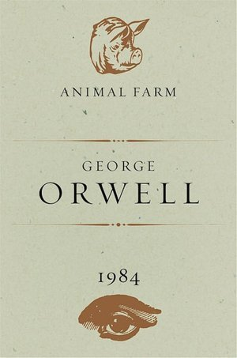
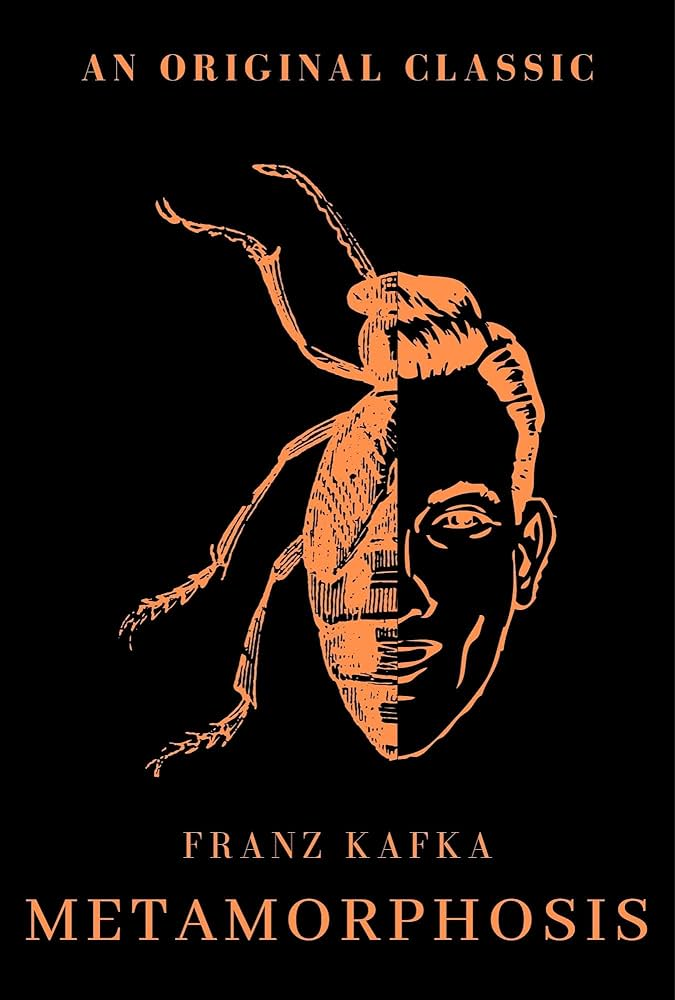
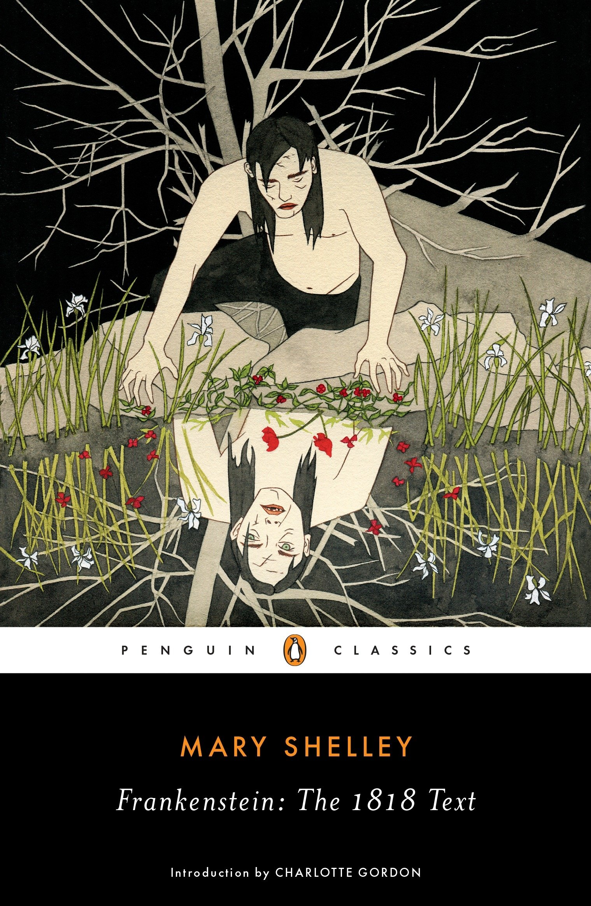
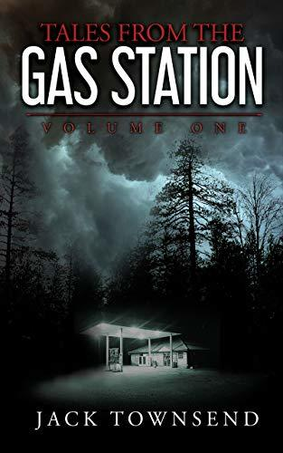
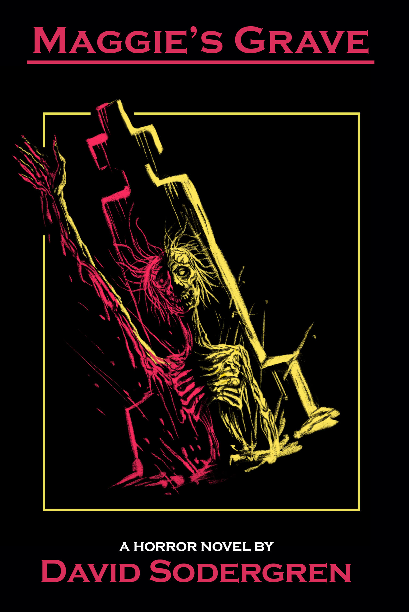

Quick Access
{kind=link}
Personal Recommendations
Brandon Sanderson's Cosmere

The Cosmere is my all-time favorite book series, and I’m excited to share it with you! It’s a vast, interconnected world with a centralized magic system (Investiture), rich world-building, and amazingly written characters. Each book feels unique, but there are subtle connections that tie everything together, making it even more fun to explore.
I know Sanderson’s books can seem intimidating because of their length. A prime example of this would be is the Way of Kings, the first book in the main series(The Stormlight Archives), which is over 1000 pages! But don’t worry, If you’re new to the Cosmere, I recommend starting with his shorter books like Tress of the Emerald Sea or The Final Empire (the first book in the Mistborn series). They’re still full of his signature magic and adventure, but won’t take as long to read.
Tress of the Emerald Sea is a perfect entry point—it's fun, whimsical, and a standalone novel, so you don’t have to commit to a whole series. If you’re ready for something more epic, The Final Empire offers a gripping, twist-filled start to the Mistborn trilogy.
George Orwell's 1984 and Animal Farm
1984 is a haunting and dystopian novel set in a totalitarian society where surveillance, censorship, and mind control reign. One aspect that I found especially fascinating was the concept of Newspeak, a language designed to limit thought and suppress dissent. While the book is undeniably grim, it remains a crucial read, especially in today’s political climate, where freedom of expression and truth are constantly under threat.
On the other hand, Animal Farm is one of my all-time favorite novellas. It’s a sharp, satirical allegory about power and corruption, told through the story of farm animals who overthrow their human owner. Though it's a bit shorter and easier to digest than 1984, its themes are just as important. In fact, I personally prefer Animal Farm over 1984 because it’s a more straightforward read, but still packs a punch with its political commentary.
Both books can be a bit depressing, but I believe they’re essential reads for understanding the dangers of unchecked power, especially in our current political environment. Orwell’s insight into human nature and society is as relevant today as ever.
Franz Kafka's The Metamorphosis
The Metamorphosis is a powerful and surreal novella that tells the story of Gregor Samsa, a man who wakes up one day to find himself transformed into a giant insect. I can relate heavily to Gregor, and the story literally impacted me as a person. His feelings of alienation and being trapped in his own life resonated deeply with me, and it made me reflect on my own experiences in a way I hadn’t before.
Though Kafka never specified what type of bug Gregor becomes, my headcanon is that he became a Cicada, my favorite bug. I like to imagine that Gregor's transformation is into one of nature's most misunderstood creatures, which fits the themes of the novella—being alienated, trapped in a shell, and ultimately silent in a world that moves on without him.
The ending of The Metamorphosis is very somber, which I actually liked. Most books often end with a happy resolution, but having such a bleak and tragic conclusion was refreshing in its own way. It might be uncomfortable for some, but I believe it works to the advantage of the story. The somber ending reinforces the themes of isolation and the absurdity of life in a way that a happy resolution just wouldn’t have been able to achieve.
Albert Camus' The Stranger

The Stranger really hits home for me. It’s about Meursault, a guy who doesn’t seem to care about anything — society’s rules, the meaning of life, even the death of his mother. I can relate to him more than I’d like to admit, especially his sense of detachment. There’s something oddly comforting about how he accepts the absurdity of life, even when everything around him is falling apart.
I love The Stranger for the same reason I love The Metamorphosis—it doesn’t sugarcoat the human experience. Both books strip away the illusions we have about meaning and show us the uncomfortable reality that life isn’t always fair or logical. There’s something freeing in that honesty, even if it’s a little unsettling at times.
It also contains my all-time favorite quote from all the books I've read: “For the first time, in that night alive with signs and stars, I opened myself to the gentle indifference of the world, finding it so much like myself.” That moment, that realization of the world's indifference, has stuck on to me since the first time I read this book. Funnily enough there's this meme that reminds me so much of this book.
{kind=link}
Mary Shelley's Frankenstein
Frankenstein is my all-time favorite horror book, and it’s easy to see why—it’s technically the first horror novel ever written, which makes Mary Shelley the true "mother of horror." This groundbreaking tale set the foundation for countless stories in the genre that followed.
What I really love about Frankenstein is the way the monster is described. It's so different from the pop culture version we all know—he’s not a mindless, hulking figure, but a deeply tragic character, struggling with identity and his relationship to his creator. This adds layers to the story that you just don’t get in the typical Hollywood portrayal.
At its core, Frankenstein is a tragic tale about creation, responsibility, and the consequences of playing god. The monster's relationship with Victor Frankenstein mirrors the moral themes we see in modern works, like Jurassic Park. The line, “Your scientists were so preoccupied with whether or not they could, they didn’t stop to think if they should,” perfectly encapsulates the same theme of unchecked ambition and its repercussions that Frankenstein explores.
Jack Townsend's Tales from the Gas Station
Tales from the Gas Station is a much lighter read compared to my other recommendations. It’s a fun, quirky dive into a world full of bizarre and creepy events that happen at a gas station. It’s not as heavy or philosophical as some of the other books I love, but it's definitely a unique experience that’s easy to get lost in.
The book is heavily influenced by CreepyPasta and indie online horror culture, which means it has a ton of strange, supernatural events happening in a way that’s both unsettling and darkly humorous. It’s the kind of horror that doesn’t take itself too seriously, but still manages to be eerie and entertaining.
My favorite character is a side character—an oversized raccoon named Rocco. He doesn’t really play a significant role in the story, but I can’t help but like him anyway. There’s something about the ridiculousness of the idea of an oversized, rabid raccoon that is so funny to me. Rocco’s one of those little details that doesn’t need to be important to stand out and make the reading experience more enjoyable.
David Sodergren's various novellas
David Sodergren's novellas are a must-read for any horror fan. His books play on many horror movie tropes and clichés that many of us horror fans will recognize right away. But what makes his work stand out is how he does it so well and with full awareness. He knows exactly what he's doing, and it makes the stories all the more fun and engaging.
My personal favorite of his is Maggie's Grave, a witch horror novella that had me hooked from start to finish. It’s full of suspense, tension, and a lot of classic witch horror vibes. But for anyone new to David Sodergren, I’d personally recommend The Haar as a great starting point. It’s a bit more accessible and gives you a great introduction to his style.